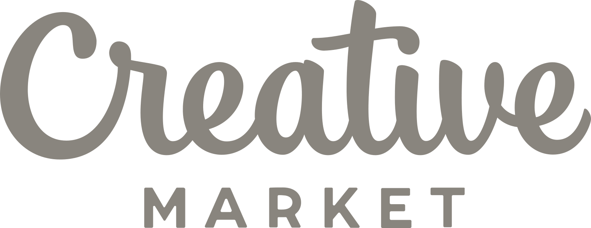

<mat-toolbar>

    <div class="container_toolbar">
  
      <button mat-button class="categorias_button" (click)="sidenav.toggle()">
        <mat-icon class="menu_button">menu</mat-icon>
        <div class="msg_categoria">Menu</div>
      </button>
  
      
        
      <div class="container_search">
        <input matInput class="search_1" type="text" placeholder="Buscar">
        <mat-icon class="icono_search">search</mat-icon>
      </div>
  
      <div class="user_data_container" *ngIf="cadena">
        <div class="container_icon_person" [routerLink]="['', 'login']">
          <mat-icon class="icon_person">person</mat-icon>
          <div class="lbl_person_d">Iniciar Sesión</div>
          <div class="lbl_person_m">Cuenta</div>
        </div>
      </div>
  
      <div class="user_data_container" *ngIf="!cadena">
  
        <div class="container_icon_person" [routerLink]="['proceso', 'carrito']"> 
          <mat-icon class="icon_person">shopping_cart</mat-icon>
          <div class="lbl_person_d">Carrito</div>
          <div class="lbl_person_m">Cart</div>
        </div>
  
        <button mat-button class="categorias_button">
          <mat-icon class="menu_button">person</mat-icon>
          <div class="msg_categoria">Mi perfil</div>
        </button>
  
      </div>
    
  
    </div>
  </mat-toolbar>